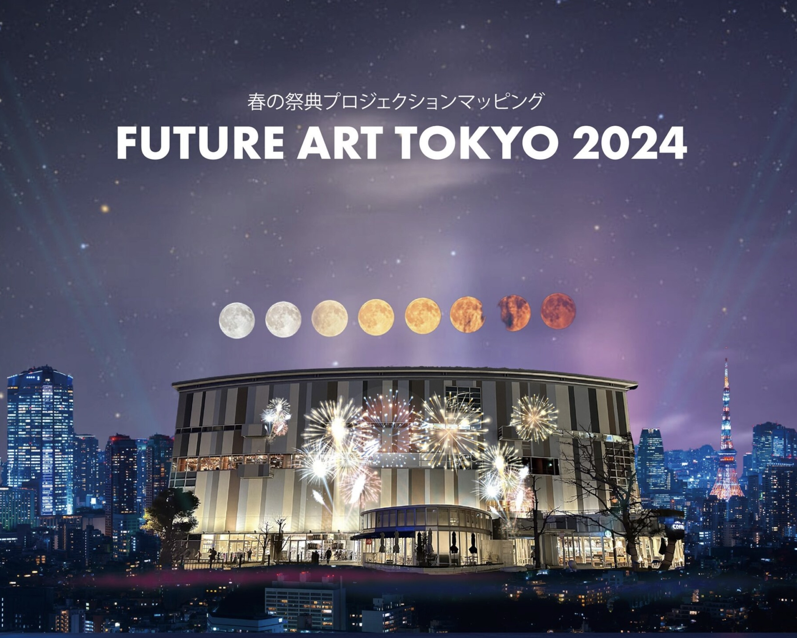

[ FUTURE ART TOKYO 2024 ] Projection Mapping



Medium Projection Mapping /flyer
year April2024
software blender / madmapper / Premiere Pro
イベント記録：
FUTURE ART TOKYO 2024（アーバンドック ららぽーと豊洲）
FUTURE ART TOKYO 2024（豊洲新聞掲載記事）
FUTURE ART TOKYO 2024（ショートリンク）
大型商業施設 「アーバンドック ららぽーと豊洲」 にて開催された
プロジェクションマッピングイベント 「FUTURE ART TOKYO 2024」 に参加しました。
本企画では、3DCGによる本館建築の再現・アニメーション制作を担当しました。
商業施設という日常的な空間において、
非日常的なアート体験を創出し、施設の価値を高められるかという課題に対し、
「未来の都市 × アート」をコンセプトにイベントを企画しました。
会場が海辺に位置する建築である点に着目し、
都市と自然、現在と未来が交差するイメージを持ってストーリーを構築しました。